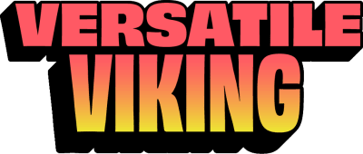

Versatile Viking
Let courage be your compass!
Fun Fact
His companion animal is the Well-Rounded Warthog.
Competitive Advantage
Embraces the unknown with curiosity and a thirst for discovery.
VeeFriends TCG
73 total · Aura 25 · Skill 24 · Stamina 24
Bio
A jack-of-all-trades, a master of many skills, and a fearless explorer of the unknown. Versatile Viking is equally comfortable sailing the high seas, forging weapons in the forge, or strategizing for the next grand adventure. He’s a reminder that life is full of possibilities, and that by embracing our curiosity and stepping outside our comfort zones, we can discover hidden talents and unlock our full potential. Also a reminder that your past does not have to be your future.
Offline page built from the supplied VeeFriends webpage/assets. Where the supplied archive lacked profile text, no unsupported information was invented.